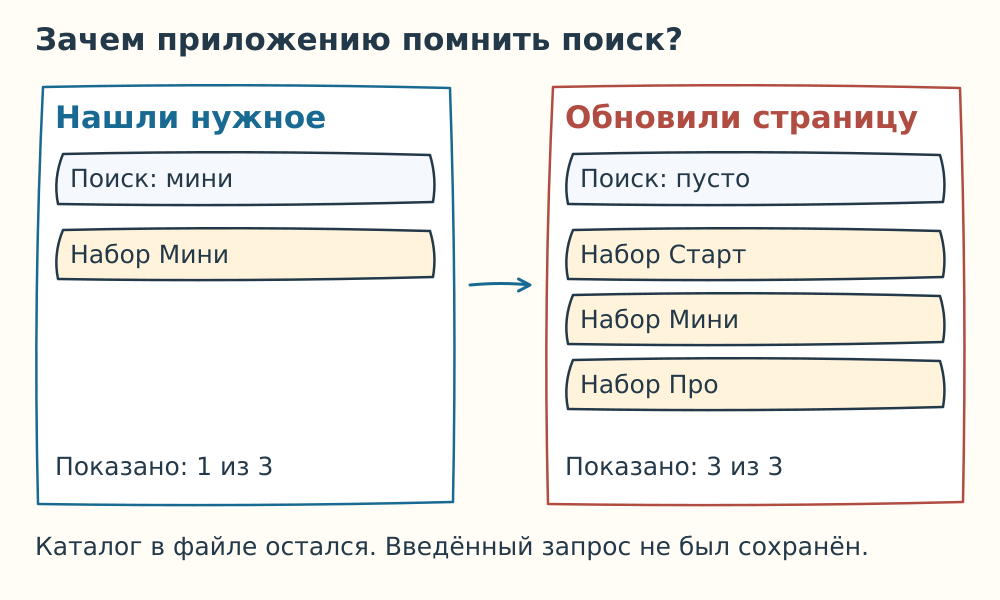
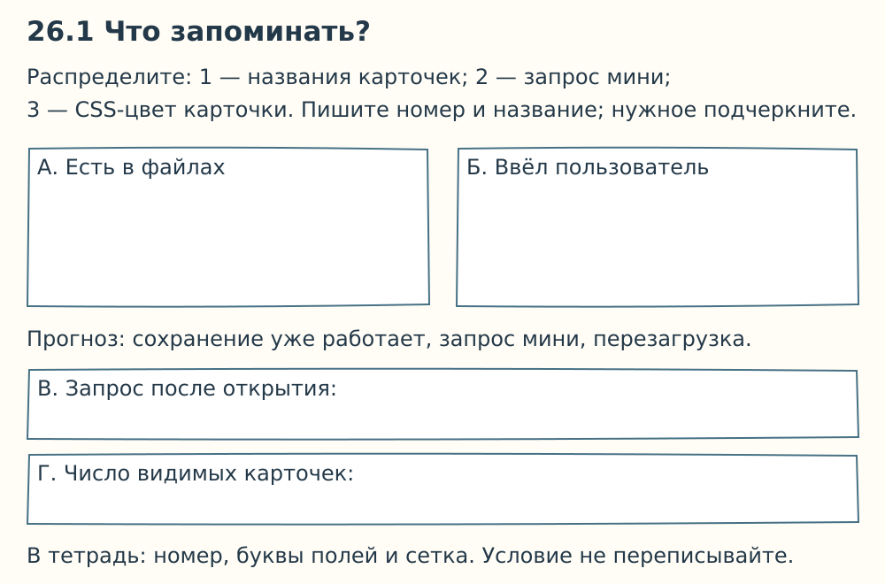
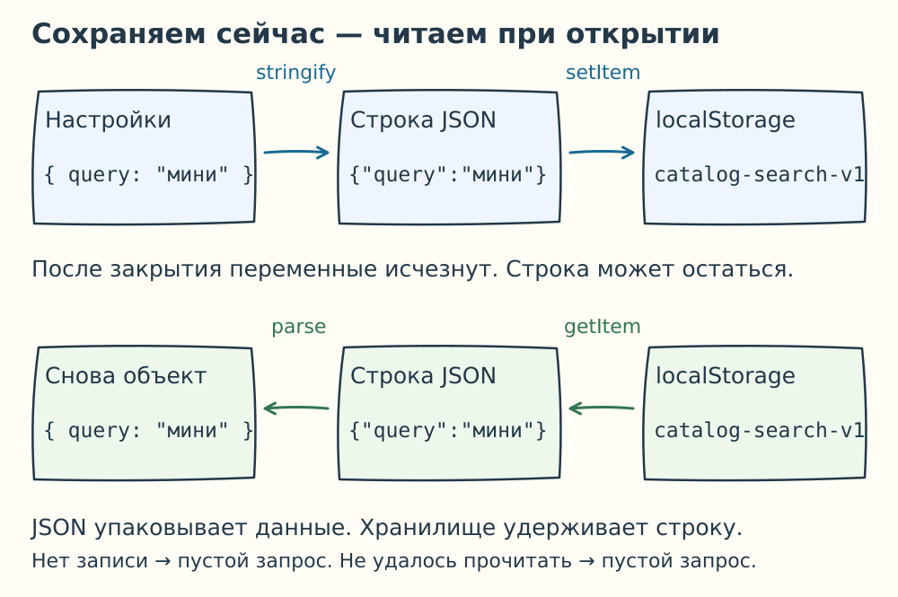
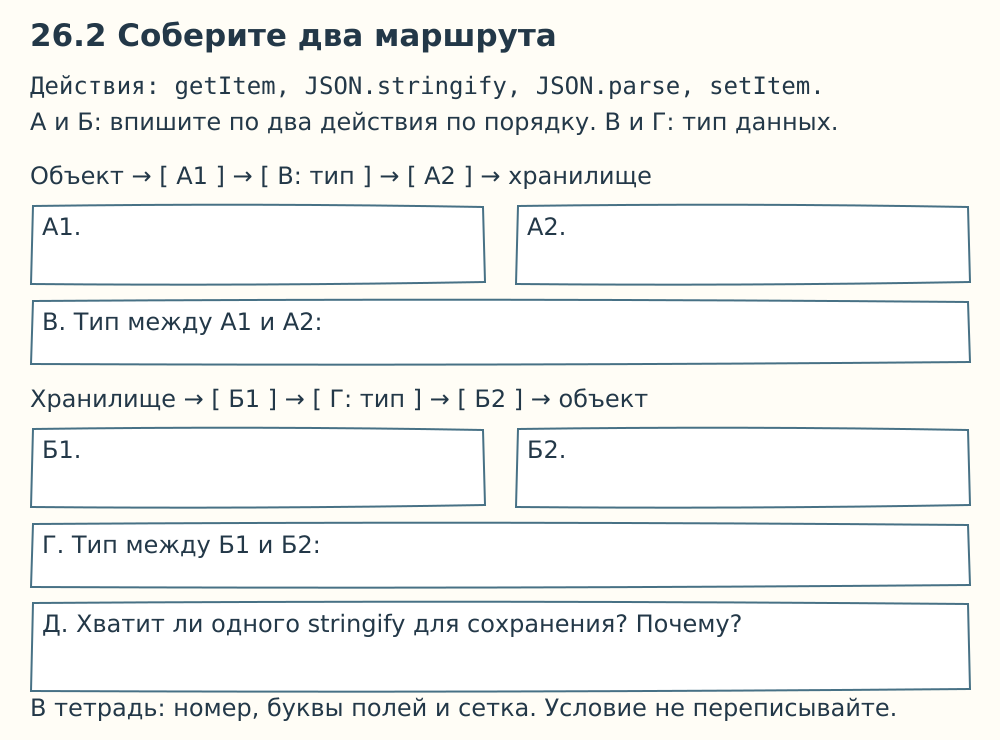
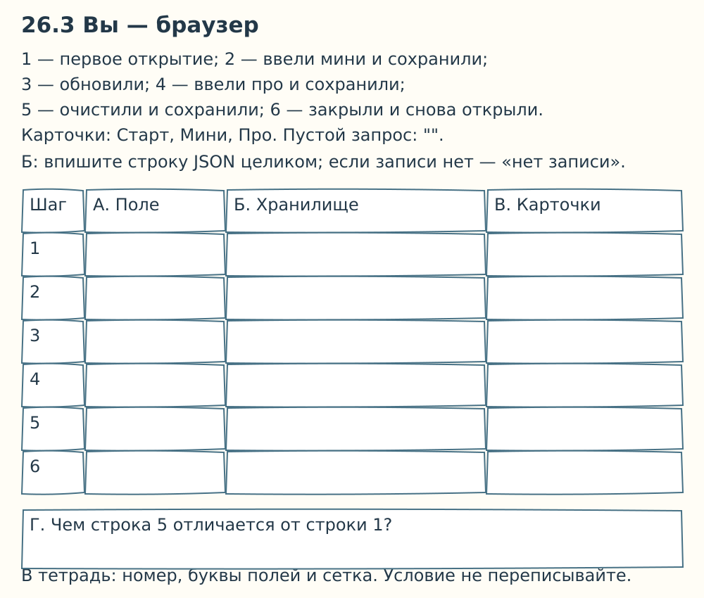
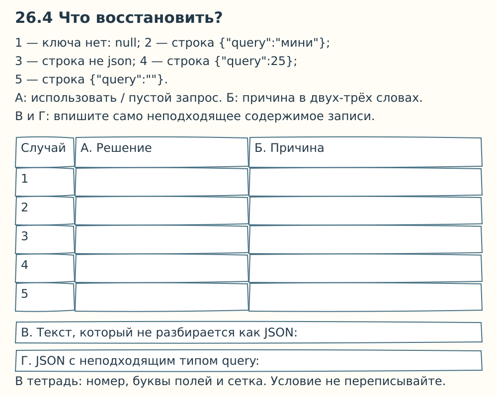
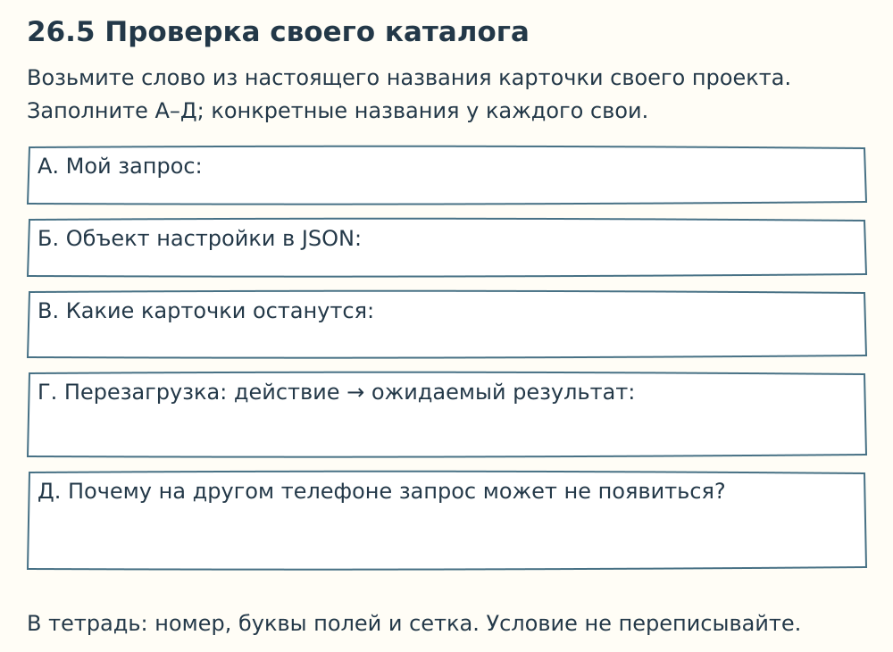

JSON и localStorage: как приложению запомнить поиск
Вы нашли нужную карточку в своём каталоге. Обновили страницу — поиск сбросился, и снова видны все карточки. Сделаем так, чтобы приложение помнило ваш запрос.
В предыдущей работе поиск уже отбирал карточки. Теперь выясним, что сохранить между открытиями страницы и как это прочитать обратно.
1. Что именно приложение забывает
В общем примере три карточки: «Набор Старт», «Набор Мини», «Набор Про». Во всех письменных заданиях этой и следующей пары используем только эти три карточки: условия и ответы одинаковы для всей группы.
При запросе мини видна одна карточка. После обычного запуска исходного скрипта запрос снова пустой и показаны три карточки.

Каталог записан в файле catalog-page.js, поэтому браузер создаёт его заново. А введённого пользователем запроса в файле нет. Если программа его не запомнит, при новом запуске ей неоткуда его взять.

Открыть карточку 26.1 на весь экран

2. Место для сохранённого запроса
localStorage — хранилище браузера. Данные лежат отдельно от переменных работающей страницы и могут пережить её закрытие.
У каждой записи есть ключ — имя, по которому её находят, — и значение в виде строки. Наш ключ: catalog-search-v1. Он хранит настройки поиска, а не весь каталог.
| Действие | Запись JavaScript |
|---|---|
| Положить строку | localStorage.setItem("catalog-search-v1", text) |
| Прочитать строку | localStorage.getItem("catalog-search-v1") |
| Удалить только эту запись | localStorage.removeItem("catalog-search-v1") |
Если записи нет, getItem возвращает null. Это нормальный случай первого открытия, а не поломка.
Обычную строку мини можно сохранить прямо. Мы выберем объект настроек { query: "мини" }: так видно имя настройки, а позже к ней можно добавить другие. Для хранения этого объекта понадобится JSON.
3. JSON — текстовая упаковка данных
В работающей программе настройки — объект:
const settings = { query: "мини" };
const text = JSON.stringify(settings);
JSON.stringify превращает объект в строку. Содержимое строки будет таким:
{"query":"мини"}
Фигурные скобки обозначают объект, query — имя свойства, мини — его значение. В JSON имена свойств и строковые значения пишут в двойных кавычках.
Запись в хранилище:
localStorage.setItem("catalog-search-v1", text);
При открытии читаем строку и восстанавливаем объект:
const raw = localStorage.getItem("catalog-search-v1");
const restored = JSON.parse(raw);
Здесь предполагается, что запись есть и содержит правильный JSON. Ниже разберём, что делать иначе. После успешного разбора restored.query — снова строка мини.


Открыть карточку 26.2 на весь экран

4. Пройдите через обновление страницы
Пусть сохранение вызывается после изменения запроса, а загрузка — при открытии страницы до вывода карточек. При загрузке приложение читает настройку, заполняет поле и показывает результат поиска.

Открыть карточку 26.3 на весь экран

Сначала заполните самостоятельно. Затем сравните с соседом строку 5: пустой запрос и отсутствие записи — разные случаи, хотя оба могут давать полный каталог.
5. Если сохранённого значения нет или оно испорчено
При первом открытии возвращаем пустой запрос. Если вместо JSON лежит не json, разбор вызовет ошибку. Приложение должно сообщить о проблеме и показать полный каталог, чтобы поиск оставался доступен.
Даже правильный JSON не гарантирует нужную настройку: {"query":25} содержит число, а поиску нужна строка. Поэтому после разбора проверяют структуру и тип значения.

Открыть карточку 26.4 на весь экран

6. Где заканчивается память браузера
Сохранение относится к одному браузеру и источнику сайта: протоколу, имени хоста и порту. На другом телефоне или в другом браузере эта настройка сама не появится. В приватном режиме данные обычно удаляются после завершения приватного сеанса; пользователь также может очистить данные сайта.
Для локальных файлов file:// поведение хранения может различаться. Будущую компьютерную проверку проводите по одному HTTP-адресу; изменение порта создаёт другой источник.
В нашем ключе хранятся учебные настройки поиска. Пароли и секретные ключи сюда не помещают. localStorage не заменяет сервер и не отправляет данные преподавателю.

Открыть карточку 26.5 на весь экран

Перед следующей частью
Завершите две фразы: «JSON нужен, чтобы…» и «localStorage нужен, чтобы…».
Мы определили, что сохранить. В следующей части проверим, как восстановить весь экран: недостаточно вернуть текст только в поле ввода.